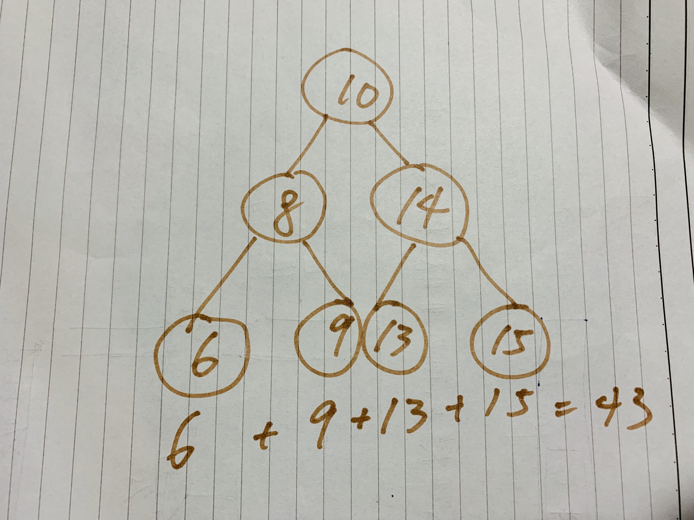

- link：Deepest Leaves Sum
- difficulty：
medium - language：
javascript
Question
Given a binary tree, return the sum of values of its deepest leaves.

Input: root = [1,2,3,4,5,null,6,7,null,null,null,null,8]
Output: 15Constraints:
- The number of nodes in the tree is between 1 and 10^4.
- The value of nodes is between 1 and 100.
Question Explanation
簡單來說，給我們一個 Binary Tree 的變數 root，然後要我們計算出在 Binary Tree 最深的分支中節點，其總數為何。
解題思路
這題似乎應該被歸類在 easy，只需要清楚基本的 Binary Tree 如何遍歷所有節點一次即可，時間複雜度為 O(n)。
需要特別注意的是，在這題當中，參數 Root 同時是 Binary Tree 也同時是一個充滿節點數字的 Array，如果是 TypeScript ，type 會是這樣。
type NumberArr = [number];
interface BinaryTreeNodeType extends NumberArr {
left: BinaryTreeNodeType,
right: BinaryTreeNodeType,
val: number
}
var deepestLeavesSum = function (root: BinaryTreeNodeType, depthSum = [], depth = 0) {
};詳細的遍歷 Binary Tree 的步驟如下（數字為代稱，不一定為實際順序）：
- 保存統計同階層的總數：為了將同層（同深度）的每個節點數字加總，也就是滿足此題的答案，我們可以使用一個名為
depthSum的 Array 來儲存，其屬性如下：- key (嚴格來說是
array的 index，並非是作為object的 key)：代表 階層深度。 - value：代表 同階層的數字加總。
- key (嚴格來說是
- 取得當前階層的層數：一開始可以先初始化一個變數
depth為 0 代表。 - 加總數字到
depthSum[depth]： 取得當前節點的 value，然後加總到前面所提的depthSum，記得用depth作為 Index。 - 遍歷節點 使用 recursive 來迭代進入每一個節點分支，由於每一個節點又有左邊以及右邊，所以至少呼叫兩次，並且再進去時先把
depth + 1。
透過用 recursive 的方式又有兩種，以上這兩種作法我都實作過，就放在以下的How to implement algorithm in javascript了：
- 使用
deepestLeavesSum本身做遞迴。 - 在
deepestLeavesSum內部新增一個 function ，並且用其作為遞迴。
- 檢查節點是否為空，這也有兩種做法：
- 在 步驟4 的，呼叫前就先檢查， 分支節點的 value，若不存在則不呼叫。
- 或是在進入當前的
deepestLeavesSum，進入後檢查 節點的 value，若不存在則不呼叫。
How to Implement algorithm in javascript
由於這題是使用 binary tree ，要驗算比較麻煩，我另外在下方提供驗算的方法和流程。
// 1. 保存統計同階層的總數 2. 取得當前階層的層數
var deepestLeavesSum = function (root, depthSum = [], depth = 0) {
// 5. 檢查節點是否為空
if (!root) return;
// 3. 加總數字到 depthSum[depth]
depthSum[depth] = (depthSum[depth] || 0) + root.val;
// 4. recursive
deepestLeavesSum(root.left, depthSum, depth + 1);
deepestLeavesSum(root.right, depthSum, depth + 1);
return depthSum[depthSum.length - 1];
};事實上這題我在一開始的寫法才是這個，上述的是參考別人的解答後再修改的，算採用 recursive 內部新增一個 function 以及 5.1 呼叫前就先檢查。
var deepestLeavesSum = function (root) {
let max = 0;
const depthSum = {};
const traverse = (root, depthNum = 0) => {
max = Math.max(max, depthNum);
if (!depthSum[depthNum]) {
depthSum[depthNum] = 0
}
depthSum[depthNum] += root.val;
if (root.left) traverse(root.left, depthNum + 1);
if (root.right) traverse(root.right, depthNum + 1)
};
traverse(root);
return depthSum[max];
};How to verify algorithm
首先我自己先設計一個 Binary Tree 如下：

合計為 6 + 9 + 13 + 15 = 43，所以最後答案必然一定要為 43。
再來就是設計一個 Binary Tree，剛好前一陣子在拜讀 Loiane Groner 的 learning javascript data structures and algorithms，學到 ES5 如何實作 Binary Tree。
細節就不多講了。
function BinarySearchTree() {
const Node = function (key) {
this.val = key;
this.left = null;
this.right = null;
};
let root = null;
this.getRoot = () => root;
let nodesLength = 0;
const insertNode = (node, newNode) => {
const newNodeIsLessThanCurrent = node.val > newNode.val;
if (newNodeIsLessThanCurrent && node.left === null) {
node.left = newNode;
} else if (newNodeIsLessThanCurrent && node.left) {
insertNode(node.left, newNode);
} else if (!newNodeIsLessThanCurrent && node.right === null) {
node.right = newNode;
} else {
insertNode(node.right, newNode);
}
};
this.insert = (key) => {
nodesLength++;
const newNode = new Node(key);
if (root === null) {
root = newNode;
return;
}
insertNode(root, newNode);
};
}接下來要做的事情便是將 [10, 8, 6, 9, 14, 13, 15] 填入 Binary Tree，然後取出第一個節點，再放入 deepestLeavesSum 做驗算即可，驗算的程式碼如下：
// 不要忘了要放上面的 BinarySearchTree 類別，這裡嫌太長就拿掉了。
const tree = new BinarySearchTree();
const values = [10, 8, 6, 9, 14, 13, 15];
values.forEach((val) => tree.insert(val));
console.log(deepestLeavesSum(tree.getRoot()));GitHub 紀錄
此次練習被收錄在我的 GitHub 點我連結。